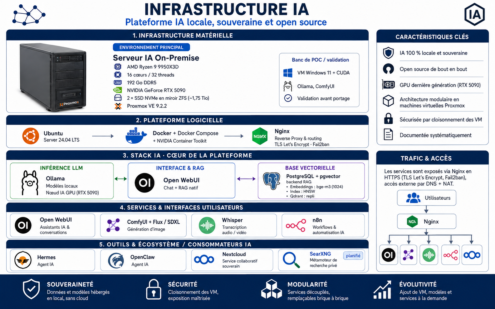

Vue d'ensemble du fil directeur de la plateforme, organisée comme sous Proxmox : un socle matériel, une bibliothèque de templates, une infrastructure permanente (nœuds IA et services), des consommateurs IA (agents et automatisation), et un stockage ZFS commun. Le statut de chaque brique distingue ce qui est en service, ce qui est éprouvé sur banc de test, et ce qui est planifié.
Actif — en service sur la cible Proxmox
Validé — éprouvé sur banc de test / POC, portage planifié
Planifié — non encore créé
1Socle matériel & hyperviseur— la machine
Serveur
AMD Ryzen 9 9950X3D · 192 Go DDR5
GPU
RTX 5090 · exclusive (1 VM GPU à la fois)
Stockage
ZFS rpool · miroir NVMe (~1,75 Tio)
Hyperviseur
Proxmox VE 9.2.2
↓
2Stockage ZFS— rpool commun
rpool/models
Modèles IA
rpool/rag
Documents & index RAG
rpool/config
Configurations
rpool/backups
Sauvegardes
rpool/nextcloud-data
Données Nextcloud
rpool/data
Disques des VM Proxmox
↓
3Templates de VM— socles clonables
Templates 110 → 131
W11 · Ubuntu Desktop / Server · ± CUDA
140 Debian-Server
Template Debian · planifié
↓
4Infrastructure permanente— nœuds IA & services
210 · IA-Core-CUDA
Ubuntu · Ollama · Open WebUI · RAG · modèles/config
260 · W11-CUDA
Alternative · banc de POC / validation rapide
215 · Services communs
PostgreSQL / pgvector · backend du RAG
205 · Nextcloud
En production · usage familial
200 · ReverseProxy
Nginx · TLS · Fail2ban — planifié (validé banc de test)
4bBriques logicielles IA— servies par les nœuds ci-dessus
Ollama
Inférence LLM local · VM210
ComfyUI + Flux
Génération d'image (SDXL / Flux) — validé sur VM260 (POC) · portage planifié
Open WebUI
Interface chat + RAG · VM210
RAG
VM210 · pgvector sur VM215 · Qdrant (repli)
Whisper
Transcription — validé · portage planifié sur VM210
↓
5Consommateurs IA— agents & automatisation
300 · n8n
Orchestration de workflows — validé banc de test W11
301 · Hermes
Agent IA — validé banc de test W11
302 · OpenClaw
Agent IA · planifié
SOUVERAINETÉ
Données et modèles hébergés en local, sans cloud
SÉCURITÉ
Cloisonnement des VM · exposition maîtrisée
MODULARITÉ
Services découplés, remplaçables brique à brique
ÉVOLUTIVITÉ
Ajout de VM, modèles et services à la demande
 Infrastructure
Infrastructure Proxmox VE
Proxmox VE IA & LLM
IA & LLM RAG Vectoriel
RAG Vectoriel